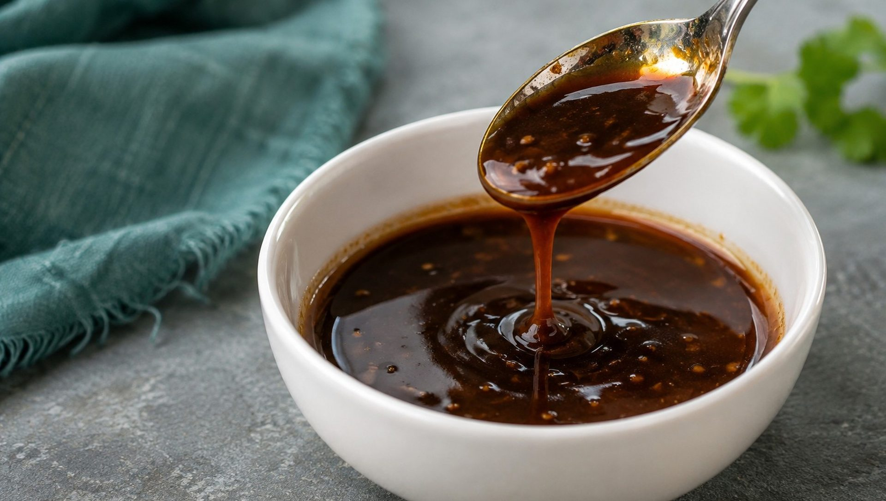
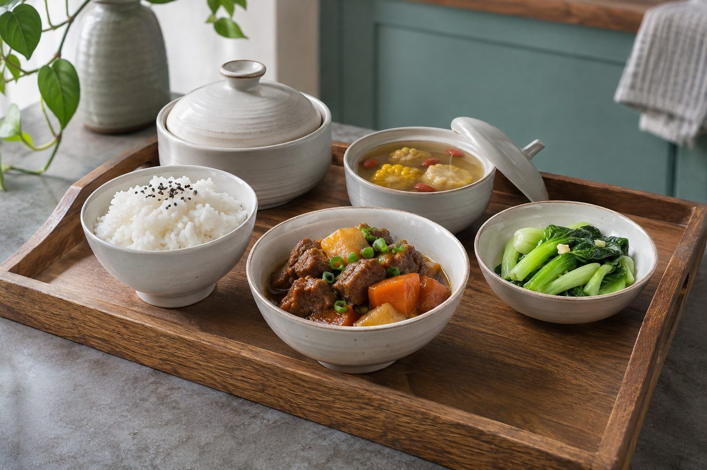
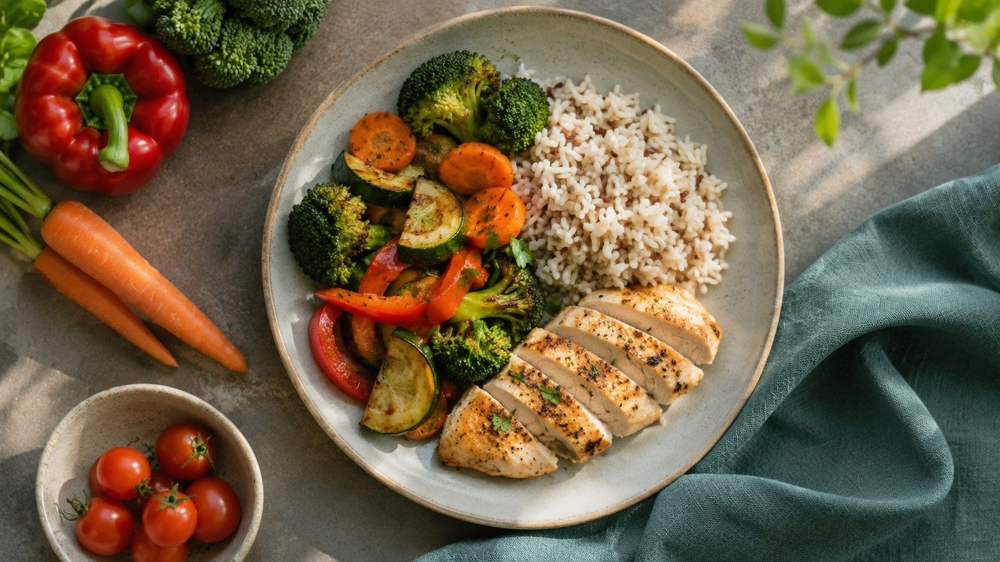
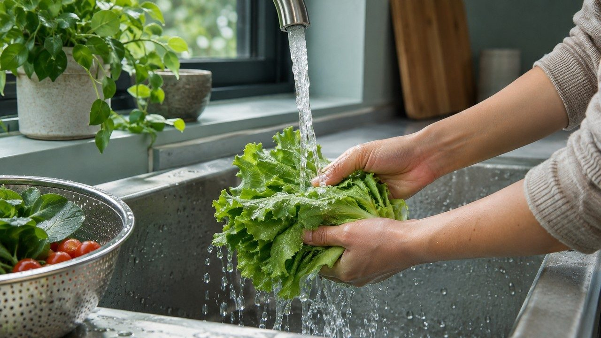
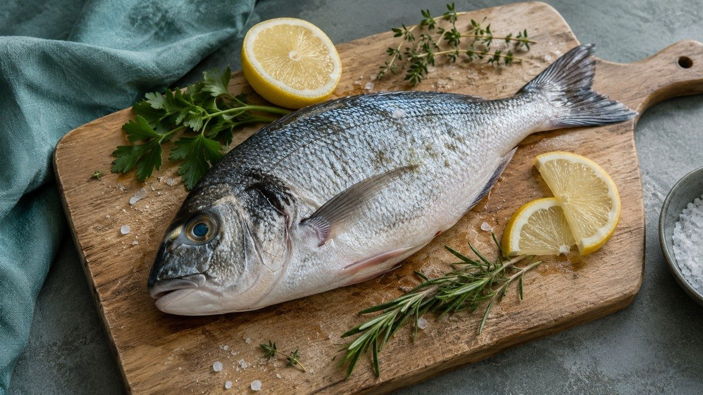
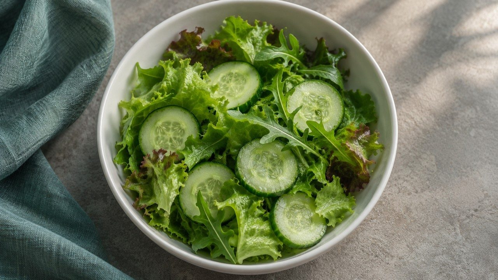
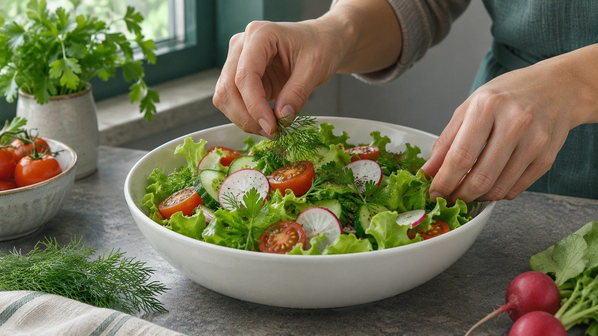
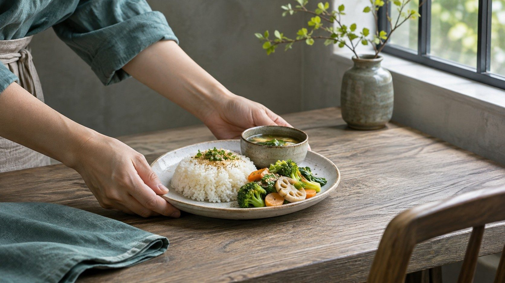
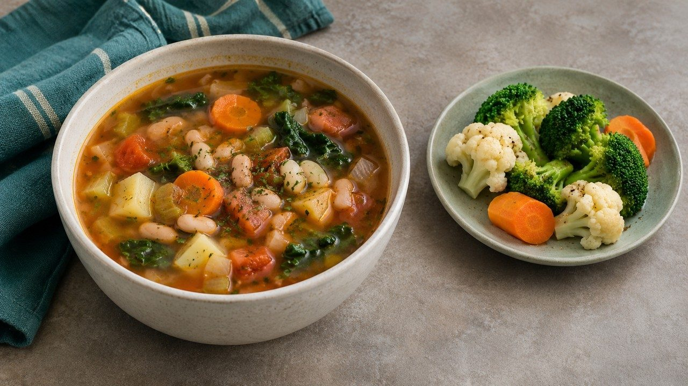

식사 기록
식사 시간과 양, 식사 뒤 불편했던 점을 간단히 적어 두세요.
식사와 생활 관리에 관한 일반 정보입니다.
질환과 치료에 따라 필요한 식사 관리가 다릅니다. 현재 치료에 맞는 안내는 의료진 또는 영양 전문가에게 확인해 주세요.

식사 시간과 양, 식사 뒤 불편했던 점을 간단히 적어 두세요.
비슷한 시간과 조건에서 체중을 재고 날짜별로 기록해 주세요.
수분 섭취 제한을 안내받았다면 담당 의료진의 지침을 따라 주세요.
새로운 식품이나 보충제를 시작하기 전에 현재 치료와 함께 검토해 주세요.
식욕 변화나 소화 불편이 계속되면 기록을 준비해 진료 때 알려 주세요.
일반 정보는 개인별 치료 계획을 대신하지 않으므로 의료진과 확인해 주세요.
먹기 힘든 음식과 비교적 섭취하기 편한 음식을 구분해 기록해 보세요.
식사와 간식의 횟수를 적어 두면 상담 때 식사 패턴을 설명하기 쉽습니다.
메스꺼움이나 더부룩함이 식사 전후 언제 나타났는지 기록해 주세요.
측정 조건이 달라지지 않도록 비슷한 시간대에 체중을 재어 보세요.
영양 보충 제품에 관한 질문은 제품 정보를 준비해 진료진에게 확인해 주세요.
식사 내용 변경은 현재 치료와 건강 상태를 아는 의료진과 상의해 주세요.
식사 내용을 크게 바꾸기 전에 현재 진료진과 계획을 확인해 주세요.
식품은 보관 방법과 소비 기한을 확인해 섭취해 주세요.
육류와 달걀 등은 충분히 익혀 먹는 방법을 확인해 주세요.
맛을 다르게 느끼기 시작한 때와 함께 먹기 어려운 음식을 기록해 주세요.
입안이 아프거나 건조해 식사하기 어렵다면 진료 때 알려 주세요.
속이 불편한 시간대와 식사 내용을 함께 적어 두세요.
식사 보조가 필요하다면 가족이나 돌봄 담당자와 내용을 공유해 주세요.
알레르기나 치료 관련 제한은 의료진에게 확인한 뒤 적용해 주세요.
복용 중인 제품의 성분표나 포장 사진을 상담 때 보여 주세요.
같은 체중계를 사용하고 측정 날짜를 함께 기록해 주세요.
영양 상담에서 묻고 싶은 내용을 메모해 진료 때 가져오세요.
새로운 불편이 생기면 식사와 증상이 나타난 시점을 기록해 주세요.
의료진에게 확인한 식사 안내를 식사를 준비하는 사람과 공유해 주세요.
건강 자료를 참고할 때 게시 날짜와 작성 주체를 확인해 주세요.
식사 상담이 필요하면 다음 예약에서 다룰 수 있도록 미리 문의해 주세요.
급격한 상태 변화가 생기면 병원이나 적절한 의료기관에 연락해 주세요.
먹는 양이 줄어드는 기간과 이유를 기록해 의료진에게 알려 주세요.
수분 섭취량에 관한 지침이 필요한 경우 담당 의료진에게 확인해 주세요.
인터넷의 식사 조언을 적용하기 전에 담당 의료진과 상의해 주세요.
검사 결과와 식사 기록을 다음 상담 때 함께 가져와 주세요.
개봉한 식품은 보관 방법과 소비 기한을 확인해 주세요.
식사 후 불편이 생겼다면 먹은 음식과 시각을 적어 두세요.
식사량이 줄거나 체중이 달라진 점은 진료 때 의료진에게 알려 주세요.
알레르기 진단이나 섭취 제한이 있으면 식품을 선택할 때 참고해 주세요.
조리와 식품 위생에 대해 궁금한 점은 의료진이나 영양 전문가에게 물어보세요.
비타민이나 보충제를 추가하기 전에 현재 치료와의 관련성을 확인해 주세요.

식욕과 체중의 변화는 기록해 두면 상담에 참고할 수 있습니다.
식사 계획은 증상과 치료 일정에 따라 달라질 수 있습니다.

식품 제한이나 보충제 사용 전에 상담해 주세요.
이 페이지는 일반적인 정보 제공을 위한 것입니다. 진단과 치료에 관한 결정은 의료진과 상담해 주세요.






